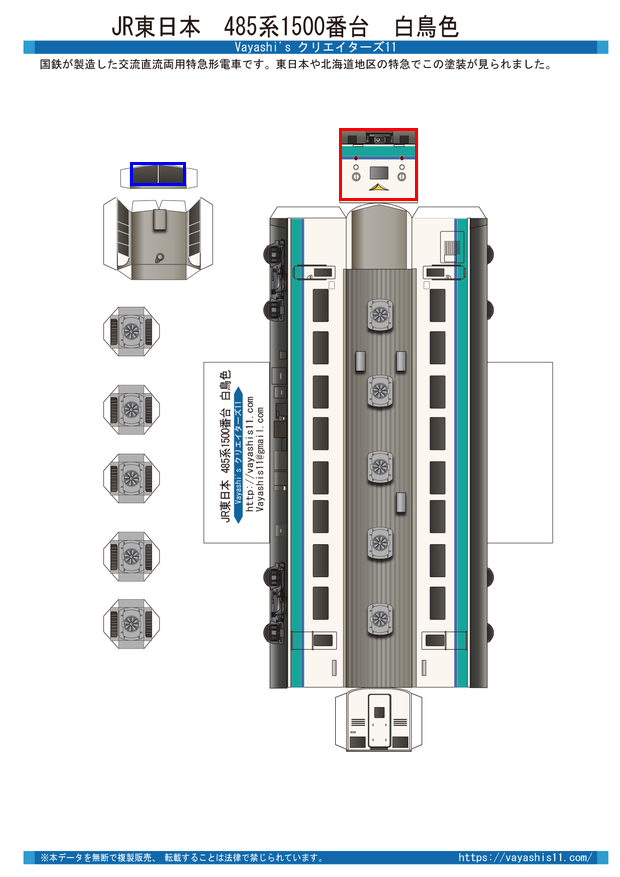
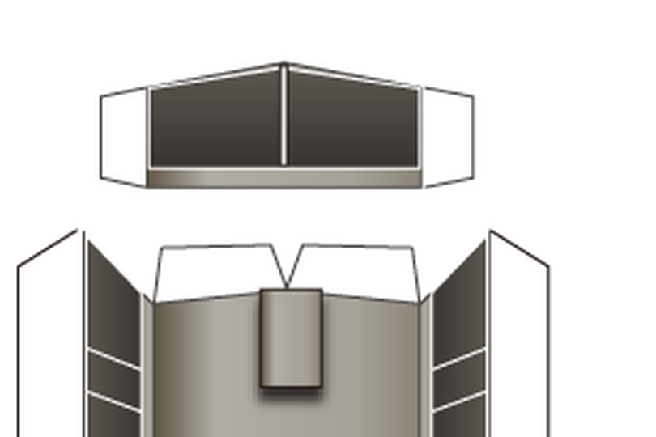

司机室脸原图（x680–835、y257–401，155×144 px）：灰顶带、奶油线、青绿带、蓝细条＋红点、奶油脸、两对圆灯、灰空行先框、黄▲。实测均色 RGB (163, 179, 175)。脸本身确实没有画风挡——因为风挡是左上角那张独立的梯形纸片，折起来盖在脸的上方。

图纸全图。脸在右上方，风挡在左上方，两张分开的纸片。第一版把蓝框标成“裙板”是错的——蓝框那张是风挡。
图纸文件 jr_east_485_1500_hakutyo.pdf，内嵌原图 1241×1755 px（xref 44）。风挡纸片位于 x262–371、y326–371（109×45 px）。


| 项目 | 现状（错） | 应该 |
|---|---|---|
| 风挡玻璃（梯形纸片） | 被当成裙板贴图，贴到脸下面（车高 0–1.23 m），所以车头下面一大块黑的 | 折起来盖在脸的上方，做司机室风挡 |
| 司机室脸 | 只有脸原图，没有风挡 | 脸＋风挡一起才是完整车头 |
| 裙板 | 用了风挡的贴图（错） | 另找裙板真正的纸片（或确认图纸上裙板位置） |
“脸原图盖满整面车头会变形”的算法仍然成立（脸宽高比 1.08 vs 整面车头 0.85，净变形约 27%），但这不是重点——重点是风挡放错了地方。

新旧对比（左：重做前 cdcf942 未翻转；右：重做后 cfb6ffa 已翻转＋去拉伸）：

证据来源：图纸 jr_east_485_1500_hakutyo.pdf 内嵌原图 xref 44（1241×1755）；裁切坐标与均色实测见上；模型提交 cfb6ffa（models-pipeline）。第一版（认成裙板）已作废。2026-11-28。